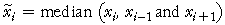

Outliers and running medians
Although moving averages are an effective smoothing technique, we saw earlier that medians are far less sensitive to outliers than means. A more robust smoothing technique therefore replaces each value by the median of it and adjacent values. For example, a 3-point running median would smoothes the value at time i with

As with moving averages, higher-order running medians use more adjacent values for the smoothing.
Comparison of means and medians
Moving averages and running medians each have their advantages and disadvantages.
British Airways share prices
The time series below shows the price of British Airways shares in the first 57 trading days of 2002 — between 2nd January and 21st March.
The checkboxes are initially set to show moving averages (running means). Firstly increase the run length to see how the running means smooth the series.
Next, set the checkbox Drag outlier. The 30th value in the series is highlighted and can be dragged to turn it into an outlier. Change it to about 260 and again observe the effect of changing the run length. Even when the run length is 7 or 9, the outlier has a fairly strong effect on the smoothed series.
Now set the checkbox Medians and uncheck Means and Drag outlier. Again examine the effect of increasing the run length on the running medians. Observe that the series has a more stepped appearance than with running means.
Again set the checkbox Drag outlier and drag the highlighted value to about 260. The outlier has minimal effect on the running medians.
Running medians, followed by moving averages
To take advantage of the best features of both moving averages and running medians, these two techniques are often applied sequentially.
British Airways share prices
The diagram below applies this technique to the British Airways share prices.
Click Drag outlier and drag the share price on the 30th day to about 260.
Use the lefthand controller to show running medians of 3. This removes the influence of the outlier. Now use the right controller to then apply running means of 3. The running means smooth off the stepped appearance that would arise with higher-order running medians.